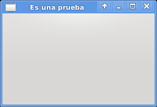

Tutorial de python+qt. Parte 1
Posted on lun 25 enero 2010 in Tutorial Python • 1 min read
Luego de unos cuantos artículos sobre gtk empezaré a publicar artículos sobre pyqt debido a que me asignaron a otro proyecto estoy evaluando desarrollar en pyqt o en wxwidget.
Los primeros tutoriales se enfocarán al desarrollo de la interfaz a pie sin utilizar qtdesigner.
Este ejemplo simplemente muestra una ventana con un tamaño definido y el título de la misma.
#!/usr/bin/env python
# -*- coding: utf-8 -*-
#Importar módulo sys
import sys
#importar QTGui de pyQt4
from PyQt4 import QtGui
#Se instancia la clase QApplication pasandole sys.argv
app = QtGui.QApplication(sys.argv)
#Se crea la instancia de QWidget.
widget = QtGui.QWidget()
#Se define el tamaño de la ventana
widget.resize(250, 150)
#Se le coloca el título a la ventana
widget.setWindowTitle('Es una prueba')
#Se muestra la ventana
widget.show()
#Se sale de la aplicación
sys.exit(app.exec_())
La figura muestra la ventana que se creó:

===
¡Haz tu donativo! Si te gustó el artículo puedes realizar un donativo con Bitcoin (BTC) usando la billetera digital de tu preferencia a la siguiente dirección: 17MtNybhdkA9GV3UNS6BTwPcuhjXoPrSzV
O Escaneando el código QR desde billetera: